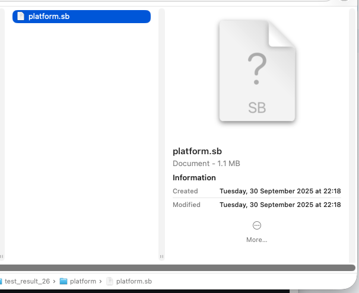

____| \
| | | _ / _ / _ \ __| _ \ __ `__ \ _ \ __| _ \
__| | | / / __/ | ___ \ | | | ( | | __/
_| \__,_| ___| ___| \___| _| _/ _\ _| _| _| \___/ _| \___|
Oct 9, 2025
iOS 26 Sandblaster
Introduction
Hello,
In this post I am sharing a fork of Sandblaster, compatible with iOS 26.
The fork (and branch)
improves Cellebrite's fork
of (the original)
Sandblaster.
Cellebrite's fork currently works for iOS 17, and partially on iOS 18.
My new fork fully supports iOS versions 17, 18 and 26, for all 3 groups of profiles:
- Platform
- Protobox
- Collection
Usage
Extracting the profiles requires some preparations, mainly extracting blobs of data from the sandbox kext.
More reading is available on the README of the repo and its links.
There are 3 groups of profiles: platform, protobox, and collection
For ios 18 and later, protobox may interchange with autobox, but the principle remains.
Using Sandblaster requires 4 files: 1 blob of data for each group, and a 4th file containing the list of operations.
Once all files are obtained, extracting the profiles looks like this:
$ python3 reverse-sandbox/reverse_sandbox.py -r 26 -o ../ios_26_operations.txt -d ../results_ios26/platform ../ios26/platform.bin
Then repeat this for collection and protobox, while keeping the same operations.txt file for all 3 groups
Getting the Kext
This example uses the latest ios version as of today, 26.0.1
To get the needed blobs and operations list we need to obtain the sandbox kext.
We can use
First, get the model and version you want from some of the available resources like
In this case I selected
So download the kernel:
$ ipsw download ipsw -d "iPhone18,1" -b "23A355" --kernel
and extract the sandbox
$ ipsw kernel extract 23A355__iPhone18,1/kernelcache.release.iPhone18,1 com.apple.security.sandbox
Extracting The Files
In this example I am using IDA pro, but Ghidra, hopper, binary ninja, can work as well.
Locating blobs offsets and sizes
Opening the kext in IDA and searching for the string
The graph node should look similar to this:
w3 contains the size, x2 contains the data blob. The sub_ below w3 was renamed for convenience.
Write down the numbers for later
There should be another xref to that same sub which contains the protobox(autobox) blob info:
The last blob should be located right next to the collection graph like so:
This time the registers are x8 and w9.
Storing all 3 offsets and values, we end up with this:
collection 0xFFFFFE00079C68F0 0xAE9A6
protobox 0xFFFFFE0007A75860 0x101819
platform 0xFFFFFE00079A4050 0x22891
Dumping
Now we need to dump those to files. Using IDA python in this case, but this can be done in many other ways
open("/Users/.../sandboxProfiles/ios26.0.1/collection.bin","wb").write(ida_bytes.get_bytes(0xFFFFFE00079C68F0, 0xAE9A6))
open("/Users/.../sandboxProfiles/ios26.0.1/protobox.bin","wb").write(ida_bytes.get_bytes(0xFFFFFE0007A75860, 0x101819))
open("/Users/.../ios26.0.1/platform.bin","wb").write(ida_bytes.get_bytes(0xFFFFFE00079A4050, 0x22891))
Each line can be pasted into the python console line at the bottom of IDA.
Operations List
Searching for the string
After about 200 strings it will end most likely on
Dump this list and save it as a newline-separated text file like so:
default
appleevent-send
authorization-right-obtain
boot-arg-set
consume-extension
device*
device-camera
device-microphone
etc...
Disclaimers
I do not work for cellebrite, I just forked their repo and made it ios 26 compatible.
The patches I obtained were not a result of reverse engineering the functions, it mainly relies of the existing branch and changing offsets to prevent crashes.
It may well be that some information is missing due to these skips, there is more work to do for verifying this.
Tested on ios 17, 18, 26 beta 7, 26.0, 26.0.1
Cellebrite's fork contains additional functionality and script that automates the downloading and extraction process. I did not test that on ios 26
Credits
Most of the work here is based on the mentioned projects and forks, and my work is minor. I will try to list them all:
- The original Sandblaster
- Cellebrite Labs's fork
- The missing readme by tfp0labs
- Slides from census labs
- 8ksec blog post and online course
- Video by Jonathan Levin
From ios 26 beta 7
